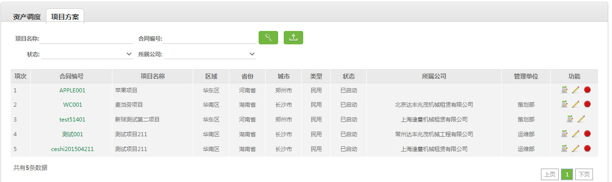

4.2、项目方案

 进行项目方案查询，查询条件：项目名称、合同编号、状态、所属公司；
进行项目方案查询，查询条件：项目名称、合同编号、状态、所属公司；
2、 导出查询的所有项目方案信息;
导出查询的所有项目方案信息;
3、点击合同编号查看详情、审核、 编辑项目方案。
编辑项目方案。
4、方案的执行程度：待调度、调度中、已调度；
5、流程：编辑-保存-审核。未审核时可编辑，审核后不可编辑。
业务背景：
项目方案：对合同信息中审核通过的合同进行需求处理，此处主要对合同信息中的塔机型号做设备需求数量编辑；此处直接影响后续的调度、进度等。
说明：
1、进行项目方案查询，查询条件：项目名称、合同编号、状态、所属公司；2、
导出查询的所有项目方案信息;3、点击合同编号查看详情、审核、
编辑项目方案。4、方案的执行程度：待调度、调度中、已调度；
5、流程：编辑-保存-审核。未审核时可编辑，审核后不可编辑。